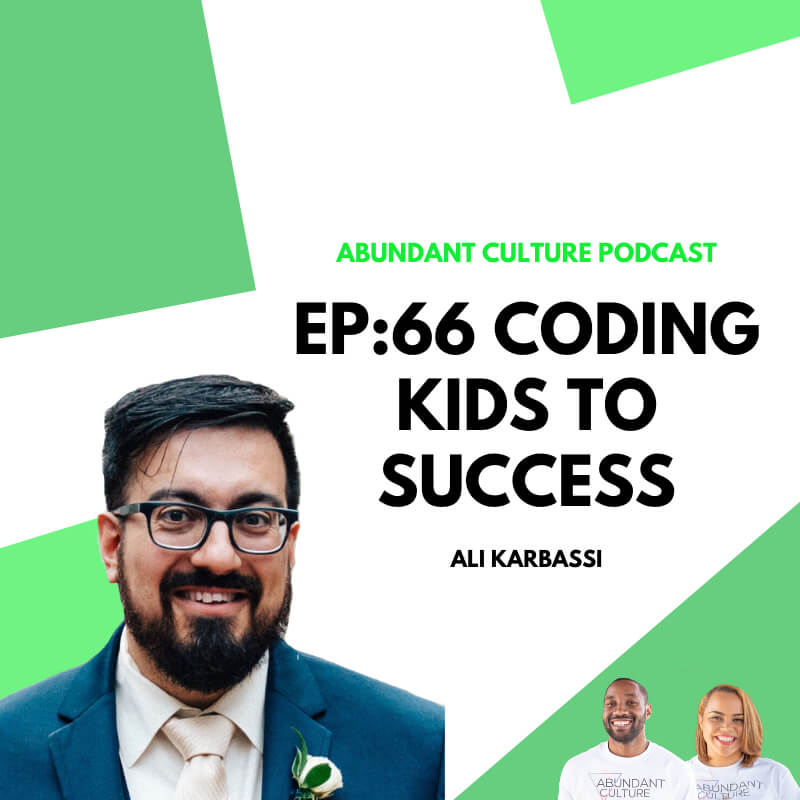
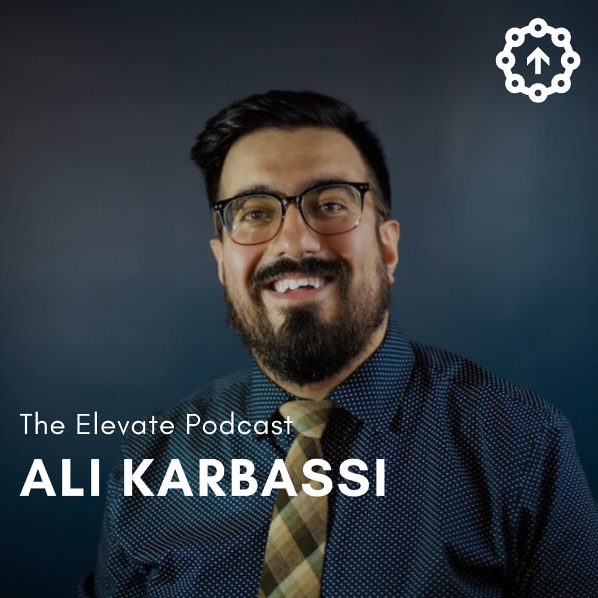
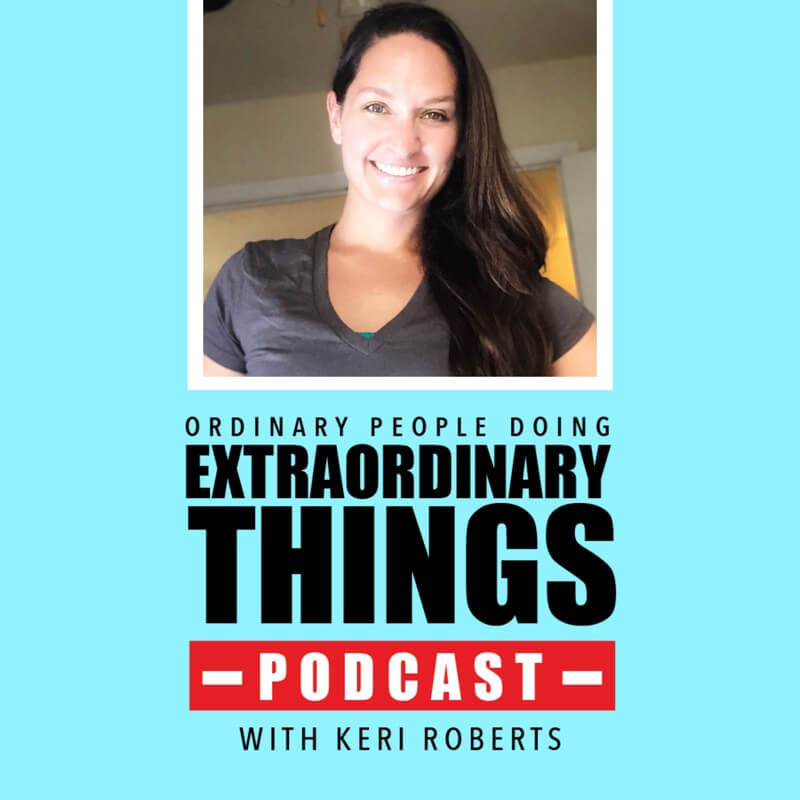

In the Press
2020
Abundant Culture Podcast: Coding Kids To Success With Ali Karbassi
This week’s guest is an amazing man in tech, Ali Karbassi!
In this episode we're covering:
- What coding is
- Creative ways to fundraise for your nonprofit
- How to find partnerships for your nonprofit
- And so much more!!
Ali Karbassi is the Founder and CEO of We All Code. We All Code is a 501(c)3 nonprofit organization dedicated to sparking curiosity in coding among kids aged 7 to 17, with a particular focus on girls, students of color, and low-income students. Our mission is to introduce a diverse group of children to the fun of coding by providing free educational resources and hands-on classes. We envision a world where all children have an equal opportunity to ignite their curiosity through coding.
Paid To Be Me: Episode Seven with Ali Karbassi
On this episode of The Elevate Podcast, we talk with Ali Karbassi.
Ali Karbassi is the Founder and CEO of We All Code is a 501(c)3 nonprofit organization dedicated to sparking curiosity in coding among kids aged 7 to 17, with a particular focus on girls, students of color, and low-income students.
Ali founded We All Code in 2013 after 10 years in the corporate sector, working in the advertising and tech industries, as well as a startup focused on the “Internet of Things.”
Additionally, Ali runs the monthly sold-out public speaking event Ignite Talks Chicago, where 10 speakers have 5 minutes to share their passions with the audience, while slides auto-advance behind them every 15 seconds.
In this episode, Ali and I talk about finding your passion, focusing on creating instead of consuming, and the importance of a supportive community.
2019
The LIVE for Yourself Revolution Podcast: Non-profits and Entrepreneurship with Ali Karbassi, founder of We All Code and Ignite Chicago
In this episode we interview Ali Karbassi, founder of We All Code, and Ignite Talks Chicago. We All Code is an educational non-profit that teaches kids aged 7 to 17 how to code through free educational resources and hands-on classes. Ignite Talks Chicago is a fun public speaking event where 10 speakers have 5 minutes to share their passions with the audience, while slides auto-advance behind them every 15 seconds. We discuss the WHY, WHAT, and HOW of Non-profits and touch on entrepreneurship as a whole. You can find out more about Ali Karbassi and his business ventures at weallcode.org and ignitechi.org.
Ordinary People Doing Extraordinary Things: Making a Difference with Kids and Coding
In episode 340, I chat with Ali Karbassi the founder of We All Code. He talks about why he fell in love with coding, why doing what you love now matters more than figuring it out for life, why he didn't want to just talk about diversity in tech, he wanted to do something about it, why comments make people think they're not good at things, getting kids to code early and how to figure out if they are having a hard time with it or just not liking it, plus his tips on how to start a non profit.